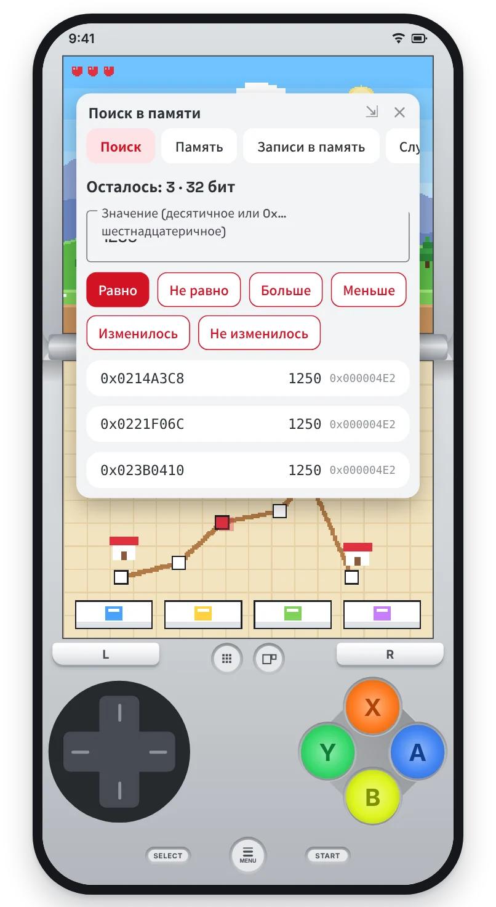
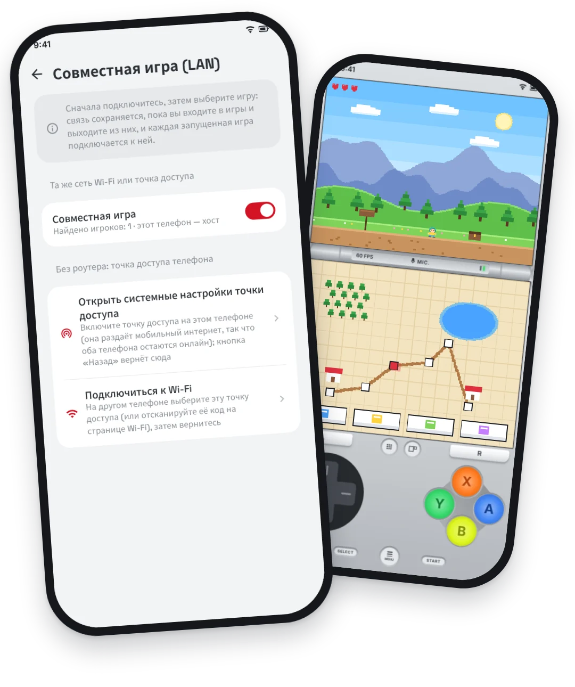

Возможности
CarloDS — эмулятор NDS для телефонов и планшетов на Android. Его ядро эмуляции, включая процессоры ARM9 и ARM7, 2D- и 3D-графику, звук, беспроводную связь и встроенный BIOS, написано с нуля и откалибровано по тестам на оригинальном оборудовании. Большинство игр работает без файлов BIOS; поддерживаются ZIP-архивы.
Собственное высокоточное ядро
- Откалибровано по тестам на оборудованиитайминги процессора, DMA, 3D-рендеринг, сглаживание, отсечение и др.
- Два ядраточное, максимально близкое к оригинальному оборудованию, и быстрое, которое с помощью JIT заметно ускоряет большинство игр
- Встроенный BIOS; собственные файлы BIOS и прошивки в папке с играми используются автоматически

Библиотека игр
- Значки и названия игр считываются автоматически; вложенные папки и ZIP поддерживаются
- Поиск, недавно запущенные игры и кнопка «Продолжить»
- Свои обложки для каждой игры
- Проверка производительности при первом запуске подбирает оптимальные настройки

Раскладка экранов и управление
- Вертикальная раскладка, а также горизонтальные: большой + малый экран, экраны рядом и один экран; переключение одним касанием, смена экранов местами
- Сенсорный ввод на нижнем экране
- Свободный выбор ориентации экрана
- Экранные кнопки можно скрыть для игры с контроллером
- Закрытие и открытие крышки (большинство игр при закрытой крышке засыпает)

Графика и производительность
- Профили для слабых, средних и мощных устройств, а также рекомендуемый профиль после проверки
- 3D с разрешением до 4× (или автоматически), сглаживание 3D, сглаживание текстур и плавное масштабирование 2D
- Рендерыпрограммный, OpenGL ES и Vulkan
- Фильтрысглаживание, LCD, развёртка, xBR и повышение резкости CAS, а также настройка яркости и контрастности
- Параметры производительности16-битный вывод, многопоточный 3D, мгновенная геометрия, автоматический пропуск кадров
- Отдельные настройки изображения, производительности и контроллера для каждой игры
- Экранная информациязаставка, частота кадров и статистика производительности

Сохранения и инструменты
- Несколько слотов для сохранения состояний с отменой; при прерывании игры прогресс сохраняется автоматически
- Ускорение (до 4×), перемотка назад (5, 10 или 15 секунд за касание) и турбокнопки с настраиваемой скоростью
- Быстрые действия в игрегромкость, быстрое сохранение, снимок экрана, крышка, читы, поиск в памяти и перемотка — каждое можно настроить
- Читыкоды Action Replay, базы usrcheat.dat и cheats.xml, а также файлы .mch, .dct, .cht и текстовые файлы
- Поиск в памяти в плавающем окне во время игры, с просмотром памяти и журналом записи

Беспроводная игра и загружаемый контент
- Локальная беспроводная игра между устройствами в одной сети Wi‑Fi или через мобильную точку доступа, если роутера нет
- Встроенная замена закрытого онлайн-сервиса прямо на вашем устройстве для локальной сети (отдельные игры)
- Загружаемый контент (экспериментально)внутриигровые подарки и раздачи встроены в приложение и доступны без интернета

Дополнительные возможности
- Поддержка RetroAchievements
- Облачные сохранения с синхронизацией через Google Диск
- Контроллеры и клавиатура с полностью настраиваемыми кнопками
- Микрофон для игр, где нужно подуть или говорить; запись только во время игры
- Слот GBAвставка игры GBA из RetroGenY, нашего эмулятора GBA, или картриджа вибрации, использующего вибромотор устройства
- Профиль консолиникнейм, день рождения, любимый цвет, сообщение и язык
- Сообщение о проблеме с отправкой журналов разработчику по почте